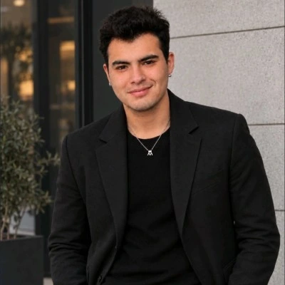

Luciano Salazar Osorio / Periodismo
Investigar,
preguntar
y encontrar historias
Una pregunta abre el camino. El terreno hace el resto.
Soy estudiante de cuarto año de Periodismo en la Universidad Autónoma de Chile. Me interesa comprender la actualidad y acercarla a través de las personas y sus historias.
Conoce mi trayectoria · CV ↗
01 / LA SELECCIÓN
Reportajes destacados.
Historias completas.
Una mirada desde el terreno.
02 / TELEVISIÓN Y REDES
Otras formas de acercar
una historia.
Notas, entrevistas y síntesis informativa.
Créditos y funciones en cada trabajo.
03 / SOBRE MÍ
Detrás de cada historia,
una pregunta.
Hola, me llamo Luciano Salazar y estudio Periodismo en la Universidad Autónoma de Chile, soy una persona que le interesa el ámbito de las comunicaciones, sobre todo en el área de periodismo político e internacional.
Me caracterizo por ser una persona que le encanta leer, escribir, ser proactivo.
Mi principal objetivo es combatir la desinformación y buscar la verdad.
CONTACTO